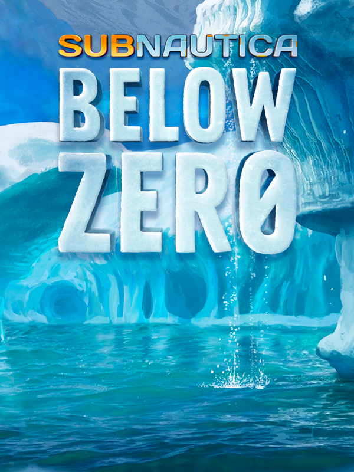

Subnautica: Below Zero
Subnautica: Below Zero
Details
|  | |
| Spielzeit | 13h 39m 0s |
| Letzte Aktivität | 16.02.2019 16:45:49 |
| Hinzugefügt | 19.12.2019 |
| Modifiziert | 10.11.2022 13:10:11 |
| Fertigstellungsstatus | Gespielt |
| Bibliothek | Steam |
| Quelle | Steam |
| Plattform | PC (Windows) |
| Veröffentlichungsdatum | 30.01.2019 |
| Community Bewertungen | 80 |
| Kritiker Punkte | 85 |
| Benutzerwertung | |
| Genre | Adventure Base Building Indie Survival |
| Entwickler | Unknown Worlds Entertainment |
| Verleger | Unknown Worlds Entertainment |
| Eigenschaft | Single Player |
| Links | Community Hub Discussions News Store Page PCGamingWiki |
| Tag | |
Beschreibung
Below Zero is an underwater adventure game set on an alien ocean world. It is a new chapter in the Subnautica universe, and is currently in development by Unknown Worlds.
Below Zero is not finished! It is in active development: Full of bugs, missing features, and performance issues. If you would like to play Below Zero when it is finished, follow our development progress. We'll keep you informed as updates improve the game.
Dive into a freezing underwater adventure. Below Zero is set in an arctic region of planet 4546B. As a scientist posted to a research station on the planet's surface, you are tasked with studying alien artefacts...
The Vesper space station orbits high above you, sending supplies, instructions, and receiving samples you launch from the surface.When disaster strikes the research station, you must improvise to survive: Construct habitats, scavenge for resources, hunt for food, and craft equipment.
Swim beneath the blue-lit, arching growth of Twisty Bridges. Navigate treacherous ice floes on the ocean surface. Clamber up snow covered peaks, and venture into icy caves. Maneuver between steaming Thermal Vents. Below Zero presents entirely new environments for you to survive, study, and explore.
Discover new lifeforms in the icy depths of 4546B. Swim through the giant Titan Holefish, escape from the aggressive Brute Shark, and visit the adorable Pengwings. Some residents of the frozen ocean will help you, and some might try to harm you.
Who were the aliens who came here before? Why were they on this planet? Can you trust your commanders? Below Zero extends the story of the Subnautica universe, diving deep into the mystery introduced in the original game. Open up new story elements with every Early Access update.
Below Zero is being created by Unknown Worlds, a small studio that traces its roots back to the 2002 Half-Life mod Natural Selection. It is the same team that created the original Subnautica. The team is scattered around the globe, from the United States to the United Kingdom, France, Russia, Austria, Australia, Germany, New Zealand, Taiwan, and many more places.
This game contains flashing lights that may make it unsuitable for people with photosensitive epilepsy or other photosensitive conditions. Player discretion is advised.
Watch out!
Below Zero is not finished! It is in active development: Full of bugs, missing features, and performance issues. If you would like to play Below Zero when it is finished, follow our development progress. We'll keep you informed as updates improve the game.
Return to planet 4546B
Dive into a freezing underwater adventure. Below Zero is set in an arctic region of planet 4546B. As a scientist posted to a research station on the planet's surface, you are tasked with studying alien artefacts...
The Vesper space station orbits high above you, sending supplies, instructions, and receiving samples you launch from the surface.When disaster strikes the research station, you must improvise to survive: Construct habitats, scavenge for resources, hunt for food, and craft equipment.
Explore new biomes
Swim beneath the blue-lit, arching growth of Twisty Bridges. Navigate treacherous ice floes on the ocean surface. Clamber up snow covered peaks, and venture into icy caves. Maneuver between steaming Thermal Vents. Below Zero presents entirely new environments for you to survive, study, and explore.
Discover new lifeforms in the icy depths of 4546B. Swim through the giant Titan Holefish, escape from the aggressive Brute Shark, and visit the adorable Pengwings. Some residents of the frozen ocean will help you, and some might try to harm you.
An ocean of intrigue
Who were the aliens who came here before? Why were they on this planet? Can you trust your commanders? Below Zero extends the story of the Subnautica universe, diving deep into the mystery introduced in the original game. Open up new story elements with every Early Access update.
About the development team
Below Zero is being created by Unknown Worlds, a small studio that traces its roots back to the 2002 Half-Life mod Natural Selection. It is the same team that created the original Subnautica. The team is scattered around the globe, from the United States to the United Kingdom, France, Russia, Austria, Australia, Germany, New Zealand, Taiwan, and many more places.
Warning
This game contains flashing lights that may make it unsuitable for people with photosensitive epilepsy or other photosensitive conditions. Player discretion is advised.